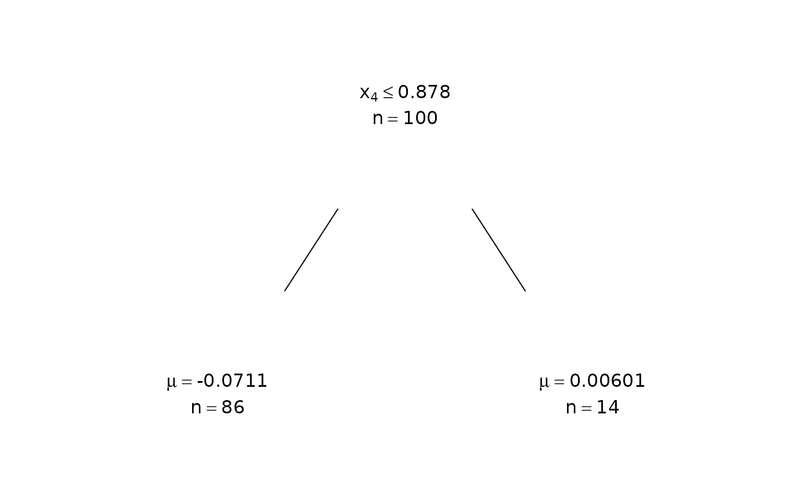

Plot a Single Tree From a Fitted BART Model
plotTree.RdMinimalist visualization of the branching and leaf contents of one tree
in a fitted bart/bart2 or
rbart_vi model, or in a dbartsSampler.
A fit-level convenience wrapper around the sampler's plotTree
method, so the trees can be plotted without reaching into the sampler
stored on the fit.
bart2's four own-class fits ("bartMultinomial",
"bartOrdinal", "bartNegbin", "bartHurdle") refuse
by name instead: their trees live on the sampler(s) those fits carry
(object$fit for the first three, object$occupancy$fit/
object$positive$fit for the hurdle), which plotTree can
be called on directly.
Usage
plotTree(object, ...)
# S3 method for class 'bart'
plotTree(object, treeNum = 1L, chainNum, sampleNum, ...)
# S3 method for class 'rbart'
plotTree(object, treeNum = 1L, chainNum = 1L, sampleNum, ...)
# S3 method for class 'dbartsSampler'
plotTree(object, ...)
# S3 method for class 'bartMultinomial'
plotTree(object, ...)
# S3 method for class 'bartOrdinal'
plotTree(object, ...)
# S3 method for class 'bartNegbin'
plotTree(object, ...)
# S3 method for class 'bartHurdle'
plotTree(object, ...)Arguments
- object
A fitted model of class
bart(frombartorbart2) orrbart(fromrbart_vi), or adbartsSampler. Fits must have been made with the trees kept (keeptrees/keepTreesequal toTRUE).- treeNum
An integer, the index of the tree to plot.
- chainNum
An integer, the index of the chain to plot from. For a
bartfit with a single chain it may be omitted; forrbartit selects the chain and defaults to the first.- sampleNum
An integer, the index of the saved sample to plot from. When omitted, the last sample is used (or the current working trees when the trees were not kept as samples).
- ...
Additional arguments, including
treePlotPars(a named numeric vector controllingnodeHeight,nodeWidth, andnodeGap) and further arguments passed on toplot.sample/chainare refused by name, on every method includingdbartsSampler's: they partial-match this method's ownsampleNum/chainNumand would otherwise draw a different tree than intended.
Details
The rendering handles constant, linear, and Gaussian-process leaves. For a
multiple-chain fit, chainNum selects the chain. Equivalent to
calling the plotTree method on the underlying sampler, i.e.
object$fit$plotTree(...) for a bart fit.
Examples
f <- function(x)
10 * sin(pi * x[,1] * x[,2]) + 20 * (x[,3] - 0.5)^2 +
10 * x[,4] + 5 * x[,5]
set.seed(99)
sigma <- 1.0
n <- 100
x <- matrix(runif(n * 10), n, 10)
Ey <- f(x)
y <- rnorm(n, Ey, sigma)
fit <- bart2(x, y, n.samples = 40L, n.burn = 10L, n.trees = 25L,
n.chains = 1L, keepTrees = TRUE, verbose = FALSE)
plotTree(fit, treeNum = 1L, sampleNum = 40L)
